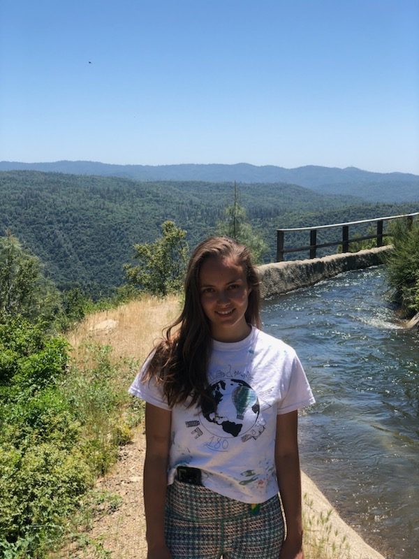

Personal Life
- Hobbies
- Art
- Hiking

My passion is helping people to come to a state of balance through exercise,
and encourage practices like enough sleep, nutrition, meditation,
therapy when needed, doing hobbies, and socializing.
Here is a video I made about the best times to eat when working out.